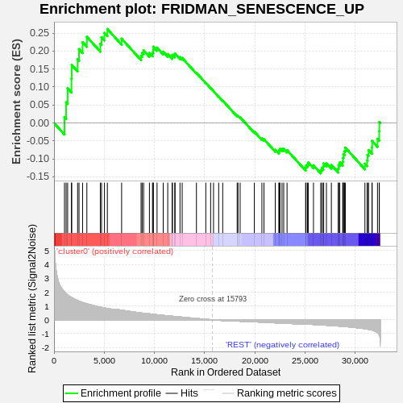
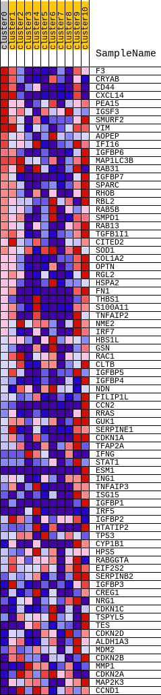
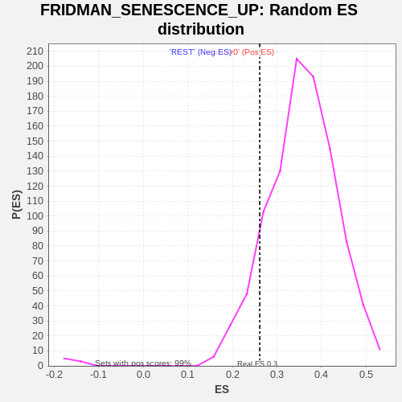

| | | Dataset | GTE_table.phenotypes_gte.cls#cluster0_versus_REST |
| Phenotype | phenotypes_gte.cls#cluster0_versus_REST |
| Upregulated in class | cluster0 |
| GeneSet | FRIDMAN_SENESCENCE_UP |
| Enrichment Score (ES) | 0.26137698 |
| Normalized Enrichment Score (NES) | 0.7325419 |
| Nominal p-value | 0.8891129 |
| FDR q-value | 1.0 |
| FWER p-Value | 1.0 |
Table: GSEA Results Summary

Fig 1: Enrichment plot: FRIDMAN_SENESCENCE_UP
Profile of the Running ES Score & Positions of GeneSet Members on the Rank Ordered List
| SYMBOL | TITLE | RANK IN GENE LIST | RANK METRIC SCORE | RUNNING ES | CORE ENRICHMENT | | 1 | F3 | na | 1046 | 2.018 | 0.0166 | Yes |
| 2 | CRYAB | na | 1207 | 1.889 | 0.0574 | Yes |
| 3 | CD44 | na | 1358 | 1.796 | 0.0963 | Yes |
| 4 | CXCL14 | na | 1737 | 1.608 | 0.1236 | Yes |
| 5 | PEA15 | na | 1764 | 1.599 | 0.1615 | Yes |
| 6 | IGSF3 | na | 2351 | 1.390 | 0.1770 | Yes |
| 7 | SMURF2 | na | 2491 | 1.346 | 0.2053 | Yes |
| 8 | VIM | na | 2846 | 1.253 | 0.2248 | Yes |
| 9 | AOPEP | na | 3275 | 1.155 | 0.2395 | Yes |
| 10 | IFI16 | na | 4613 | 0.918 | 0.2205 | Yes |
| 11 | IGFBP6 | na | 4734 | 0.899 | 0.2386 | Yes |
| 12 | MAP1LC3B | na | 5025 | 0.857 | 0.2504 | Yes |
| 13 | RAB31 | na | 5315 | 0.821 | 0.2614 | Yes |
| 14 | IGFBP7 | na | 6736 | 0.695 | 0.2344 | No |
| 15 | SPARC | na | 8673 | 0.495 | 0.1867 | No |
| 16 | RHOB | na | 8785 | 0.484 | 0.1950 | No |
| 17 | RBL2 | na | 8930 | 0.472 | 0.2020 | No |
| 18 | RAB5B | na | 9506 | 0.431 | 0.1947 | No |
| 19 | SMPD1 | na | 9812 | 0.408 | 0.1952 | No |
| 20 | RAB13 | na | 9886 | 0.401 | 0.2026 | No |
| 21 | TGFB1I1 | na | 9890 | 0.400 | 0.2122 | No |
| 22 | CITED2 | na | 10266 | 0.366 | 0.2095 | No |
| 23 | SOD1 | na | 10879 | 0.320 | 0.1984 | No |
| 24 | COL1A2 | na | 11331 | 0.290 | 0.1915 | No |
| 25 | OPTN | na | 11770 | 0.257 | 0.1842 | No |
| 26 | RGL2 | na | 11799 | 0.255 | 0.1895 | No |
| 27 | HSPA2 | na | 12033 | 0.240 | 0.1881 | No |
| 28 | FN1 | na | 12060 | 0.239 | 0.1931 | No |
| 29 | THBS1 | na | 12552 | 0.206 | 0.1829 | No |
| 30 | S100A11 | na | 12770 | 0.190 | 0.1808 | No |
| 31 | TNFAIP2 | na | 14189 | 0.096 | 0.1394 | No |
| 32 | NME2 | na | 15121 | 0.038 | 0.1117 | No |
| 33 | IRF7 | na | 15602 | 0.011 | 0.0971 | No |
| 34 | HBS1L | na | 15892 | -0.003 | 0.0883 | No |
| 35 | GSN | na | 16405 | -0.033 | 0.0733 | No |
| 36 | RAC1 | na | 16807 | -0.055 | 0.0622 | No |
| 37 | CLTB | na | 18246 | -0.091 | 0.0201 | No |
| 38 | IGFBP5 | na | 18330 | -0.095 | 0.0198 | No |
| 39 | IGFBP4 | na | 18543 | -0.103 | 0.0158 | No |
| 40 | NDN | na | 19958 | -0.144 | -0.0243 | No |
| 41 | FILIP1L | na | 20712 | -0.174 | -0.0433 | No |
| 42 | CCN2 | na | 20918 | -0.181 | -0.0453 | No |
| 43 | RRAS | na | 22040 | -0.220 | -0.0745 | No |
| 44 | GUK1 | na | 22399 | -0.232 | -0.0800 | No |
| 45 | SERPINE1 | na | 22439 | -0.233 | -0.0755 | No |
| 46 | CDKN1A | na | 22511 | -0.236 | -0.0720 | No |
| 47 | TFAP2A | na | 22716 | -0.241 | -0.0724 | No |
| 48 | IFNG | na | 22884 | -0.247 | -0.0716 | No |
| 49 | STAT1 | na | 23216 | -0.259 | -0.0756 | No |
| 50 | ESM1 | na | 25067 | -0.312 | -0.1251 | No |
| 51 | ING1 | na | 25110 | -0.314 | -0.1188 | No |
| 52 | TNFAIP3 | na | 25252 | -0.317 | -0.1154 | No |
| 53 | ISG15 | na | 25327 | -0.319 | -0.1100 | No |
| 54 | IGFBP1 | na | 25849 | -0.338 | -0.1179 | No |
| 55 | IRF5 | na | 26573 | -0.367 | -0.1313 | No |
| 56 | IGFBP2 | na | 26677 | -0.371 | -0.1255 | No |
| 57 | HTATIP2 | na | 26825 | -0.378 | -0.1208 | No |
| 58 | TP53 | na | 26865 | -0.380 | -0.1128 | No |
| 59 | CYP1B1 | na | 27139 | -0.393 | -0.1118 | No |
| 60 | HPS5 | na | 27631 | -0.414 | -0.1169 | No |
| 61 | RABGGTA | na | 28317 | -0.449 | -0.1271 | No |
| 62 | EIF2S2 | na | 28350 | -0.450 | -0.1172 | No |
| 63 | SERPINB2 | na | 28469 | -0.457 | -0.1098 | No |
| 64 | IGFBP3 | na | 28762 | -0.473 | -0.1074 | No |
| 65 | CREG1 | na | 28792 | -0.474 | -0.0968 | No |
| 66 | NRG1 | na | 28841 | -0.477 | -0.0867 | No |
| 67 | CDKN1C | na | 28948 | -0.482 | -0.0783 | No |
| 68 | TSPYL5 | na | 29020 | -0.486 | -0.0687 | No |
| 69 | TES | na | 30974 | -0.644 | -0.1134 | No |
| 70 | CDKN2D | na | 31189 | -0.667 | -0.1038 | No |
| 71 | ALDH1A3 | na | 31231 | -0.673 | -0.0888 | No |
| 72 | MDM2 | na | 31340 | -0.691 | -0.0754 | No |
| 73 | CDKN2B | na | 31679 | -0.744 | -0.0678 | No |
| 74 | MMP1 | na | 31695 | -0.747 | -0.0502 | No |
| 75 | CDKN2A | na | 32226 | -0.928 | -0.0441 | No |
| 76 | MAP2K3 | na | 32397 | -1.075 | -0.0233 | No |
| 77 | CCND1 | na | 32410 | -1.091 | 0.0028 | No |
Table: GSEA details [plain text format]

Fig 2: FRIDMAN_SENESCENCE_UP
Blue-Pink O' Gram in the Space of the Analyzed GeneSet

Fig 3: FRIDMAN_SENESCENCE_UP: Random ES distribution
Gene set null distribution of ES for FRIDMAN_SENESCENCE_UP